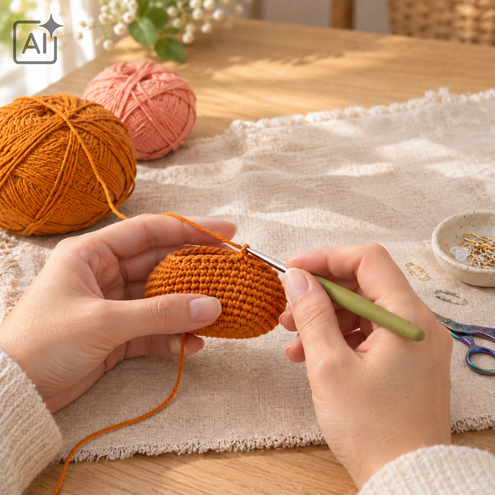
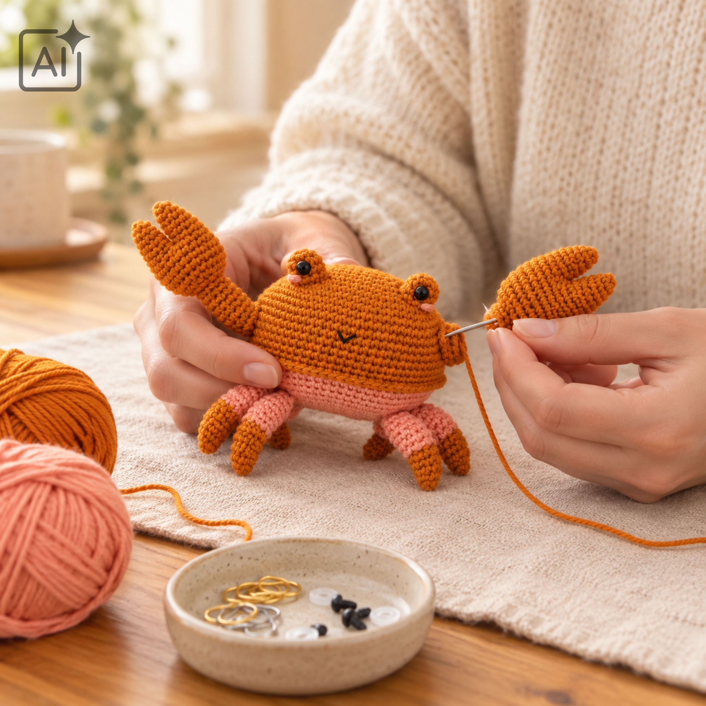

Afkortingen
- AL = alleen in de achterste lus
- VL = alleen in de voorste lus
- L = losse
- hstk = half stokje
- v = vaste
- hv = halve vaste
- st = steek of steken
- meerd = 2 vasten in dezelfde steek
-
onz mind = twee steken samenhaken door alleen de voorste lussen
- [18] = het totale aantal steken na de ronde
Voordat je begint
Werk in doorgaande rondes. Het lijf begint met een ovaal rond een
lossenketting. Maak alle losse onderdelen apart. Speld ze eerst vast
om de plaatsing te controleren.

Lijf
Werk met oranje.
Ronde 1: L7, sla de eerste L vanaf de haaknaald over, v in volgende 5
L, 5v in laatste L, ga verder aan de andere kant van de L, v in
volgende 4 st, 4v in laatste st [18]
Ronde 2: (v in volgende 6 st, meerd 3 keer) herhaal 2 keer [24]
Ronde 3: v in volgende 6 st, (v in volgende st, meerd in volgende st)
herhaal 3 keer, v in volgende 6 st, (v in volgende st, meerd in
volgende st) herhaal 3 keer [30]
Ronde 4: v in volgende 6 st, (meerd in volgende st, v in volgende 2
st) herhaal 3 keer, v in volgende 6 st, (meerd in volgende st, v in
volgende 2 st) herhaal 3 keer [36]
Ronde 5: v in volgende 6 st, (v in volgende 3 st, meerd in volgende
st) herhaal 3 keer, v in volgende 6 st, (v in volgende 3 st, meerd in
volgende st) herhaal 3 keer [42]
Ronde 6: v in volgende 6 st, (meerd in volgende st, v in volgende 4
st) herhaal 3 keer, v in volgende 6 st, (meerd in volgende st, v in
volgende 4 st) herhaal 3 keer [48]
Ronde 7: v in volgende 6 st, (v in volgende 5 st, meerd in volgende
st) herhaal 3 keer, v in volgende 6 st, (v in volgende 5 st, meerd in
volgende st) herhaal 3 keer [54]
Ronde 8: v in volgende 6 st, (meerd in volgende st, v in volgende 6
st) herhaal 3 keer, v in volgende 6 st, (meerd in volgende st, v in
volgende 6 st) herhaal 3 keer [60]
Ronde 9: v in volgende 6 st, (v in volgende 7 st, meerd in volgende
st) herhaal 3 keer, v in volgende 6 st, (v in volgende 7 st, meerd in
volgende st) herhaal 3 keer [66]
Ronde 10: v in volgende 6 st, (meerd in volgende st, v in volgende 8
st) herhaal 3 keer, v in volgende 6 st, (meerd in volgende st, v in
volgende 8 st) herhaal 3 keer [72]
Rondes 11-16: v in alle 72 st [72]
Ronde 17: v in alle 72 st in VL [72]
Hecht af en werk de losse uiteinden weg. Hecht Apricot (22) aan in een
vrije achterste lus van de voorgaande ronde.
Ronde 18: (v in volgende 8 lussen, sla volgende lus over) herhaal 8
keer [64]
Ronde 19-22: v in alle 64 st [64]
Ronde 23: (v in volgende 3 st, onz mind, v in volgende 3 st) herhaal 8
keer [56]
Ronde 24: (v in volgende 5 st, onz mind) herhaal 8 keer [48]
Ronde 25: (v in volgende 2 st, onz mind, v in volgende 2 st) herhaal 8
keer [40]
Ronde 26: (v in volgende 3 st, onz mind) herhaal 8 keer [32]
Ronde 27: (v in volgende st, onz mind, v in volgende st) herhaal 8
keer [24]
Ronde 28: (v in volgende st, onz mind) herhaal 8 keer [16]
Ronde 29: onz mind 8 keer [8]
Hecht af, laat er een lange draad garen aan. Gebruik een stopnaald,
haal deze door alle voorste lussen van de laatste ronde en trek aan de
draad om het gat te sluiten.
Oogkassen: maak er twee
Werk met oranje
Ronde 1: begin met 5v in een magische ring [5]
Ronde 2: meerd 5 keer [10]
Ronde 3-5: v in alle 10 st [10]
Hecht af, laat er een draad garen aan om mee te naaien. Voeg de
veiligheidsogen toe tussen rondes 3 en 4.
Scharen: maak er twee
Werk met oranje. Begin bij de punt van de eerste schaar.
Ronde 1: begin met 6v in een magische ring [6]
Ronde 2: (meerd in volgende st, v in volgende 2 st) herhaal 2 keer [8]
Ronde 3: v in alle 8 st [8]
Ronde 4: (meerd in volgende st, v in volgende 3 st) herhaal 2 keer
[10]
Ronde 5: v in alle 10 st [10]
Ronde 6: (meerd in volgende st, v in volgende 4 st) herhaal 2 keer
[12]
Hecht af, laat er een draad garen aan. Maak de tweede punt van de
schaar door rondes 1 tot 6 te herhalen. Knip het garen aan het einde
niet af en ga verder met de volgende ronde om de punten van de schaar
samen te voegen.
Ronde 7: breng het eerste deel van de schaar dicht bij de laatste st
van het tweede deel, v in volgende 9 st van het eerste deel, sla
laatste 3 st over, sla volgende 3 st van het tweede deel over, v in
volgende 9 st van het tweede deel [18, met een gat in het midden]
Ronde 8: (v in volgende 5 st, meerd in volgende st) herhaal 3 keer
[21]
Ronde 9: (v in volgende 3 st, meerd in volgende st, v in volgende 3
st) herhaal 3 keer [24]
Rondes 10-12: v in alle 24 st [24]
Pauzeer het werk en gebruik de draad garen van de eerste punt van de
schaar en een stopnaald om de opening tussen de punten dicht te maken
.
Ronde 13: (v in volgende st, onz mind) herhaal 8 keer [16]
Ronde 14: (v in volgende st, onz mind, v in volgende st) herhaal 4
keer [12]
Ronde 15: hv in alle 12 st [12]
Rondes 16-20: v in alle 12 st [12]
Rondes 21-23: v in volgende 2 st, hstk in volgende 6 st, v in volgende
4 st [12]
Hecht af, laat er een draad garen aan om mee te naaien. Vul de scharen
op.
Poten: maak er acht
Werk met Warm Curry (24). Begin bij de punt van de poot.
Ronde 1: begin met 5v in een magische ring [5]
Ronde 2: meerd in volgende st, v in volgende 4 st [6]
Ronde 3: meerd in volgende st, v in volgende 5 st [7]
Ronde 4: v in alle 7 st [7]
Ronde 5: meerd in volgende st, v in volgende 6 st [8]
Ronde 6: v in alle 8 st [8]
Wissel naar Apricot (22). Hecht de voorgaande kleur af.
Ronde 7: hv in alle 8 st [8]
Ronde 8: (meerd in volgende st, v in volgende st) herhaal 4 keer [12]
Ronde 9: v in alle 12 st [12]
Ronde 10: v in volgende 4 st, onz mind 2 keer, v in volgende 4 st [10]
Ronde 11: v in alle 10 st [10]
Ronde 12: v in volgende 3 st, onz mind 2 keer, v in volgende 3 st [8]
Ronde 13: v in alle 8 st [8]
Hecht af, laat er een draad garen aan om mee te naaien. Vul de punt
een beetje op, gebruik een potlood of een eetstokje om de vulling door
het bovenste deel van de poot naar de punt toe te duwen.
Bert in elkaar zetten
Tip: gebruik spelden om de plaatsing van alle delen te controleren
voordat je ze op hun plaats vast gaat naaien.
- Gebruik spelden om de positie van de ogen te controleren voordat je
ze op hun plaats vast naait. Ze moeten aan de voorkant over rondes 3
tot 5 zitten, ongeveer 8 steken uit elkaar.
- Gebruik zwart borduurgaren (maar twee draden) om een klein mondje
over ronde 12 te borduren, tussen de ogen. Gebruik een vliegsteek van
ongeveer 1,5 steek breed.
- Gebruik spelden om de scharen en de poten te plaatsen. Naai op hun
plaats vast als je tevreden bent met de positie.
- Gebruik een draadje apricot garen om 2-steken brede wangetjes onder
de ogen te borduren.

Veel haakplezier!
Werk alle losse draden weg en controleer of de onderdelen goed
vastzitten.
Terug naar Bert

 Terug naar Bert
Terug naar Bert